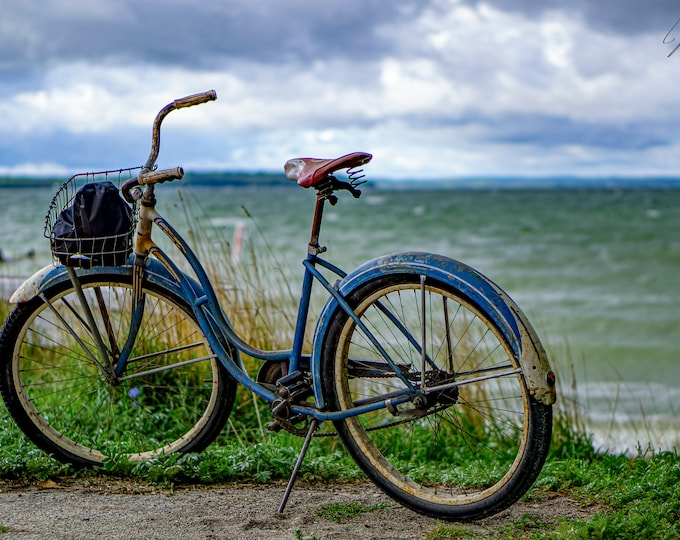

Trading Passions
Maya had restored a vintage bicycle she picked up at a car boot sale, but after moving to a new city with no cycling paths nearby, it sat unused in her hallway. Tom, a keen cyclist, had accumulated a full set of quality gardening tools after inheriting his grandmother's allotment — tools he never touched since he preferred pavement to soil.
Both listed their items on Swap & Share the same week. A quick message, a short video call to compare notes, and the swap was agreed. Tom rode Maya's bicycle home the very next Saturday. Maya planted her first raised bed that afternoon.
"I kept walking past that bike feeling guilty. Now it's out there being ridden every day — and I finally have the tools to grow my own tomatoes. Swap & Share turned two pieces of clutter into two fresh starts."
Maya and Tom's exchange is a reminder that one person's unused item is often exactly what someone else has been looking for. The best trades aren't just practical — they open up a whole new hobby.